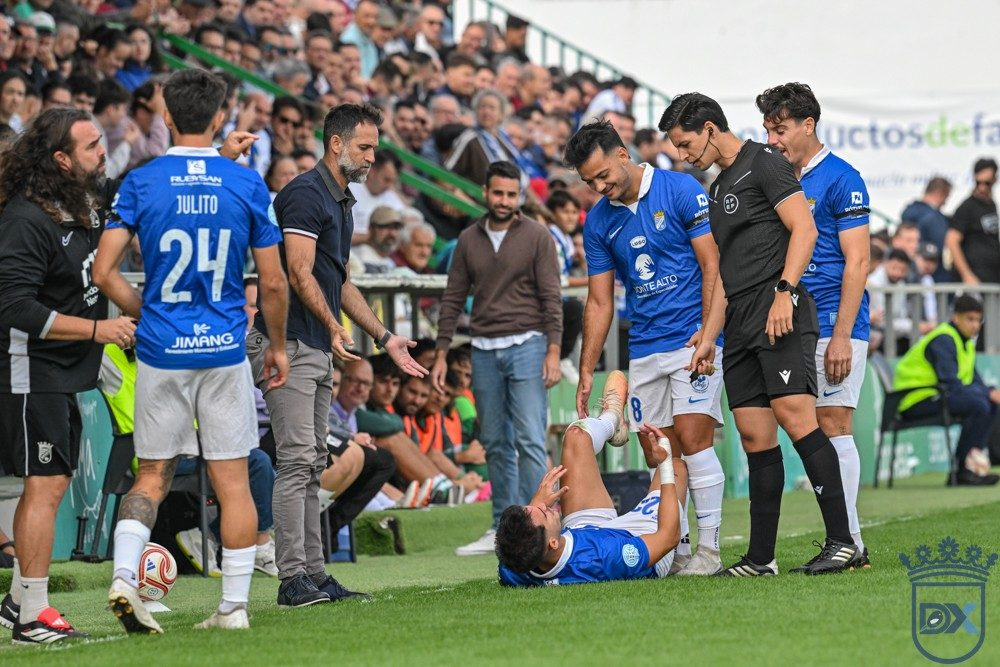

Segovia: "Un equipo se construye desde el orden defensivo"

Foto: Diario XerecistaEl entrenador del Xerez CD se mostró satisfecho tras la goleada (0-4) en El Palmar. Destacó la portería a cero, la superioridad de su equipo en la segunda parte y el premio a Saúl y Salas, pero no quiere mirar la clasificación: "Quedan 24 jornadas".
Abel Segovia valoró el triunfo ante el Atlético Sanluqueño como un paso más en el crecimiento del equipo. El Xerez suma tres victorias seguidas, pero el técnico sevillano no quiso dar importancia a la tabla a estas alturas de la temporada.
Un mal arranque y un parón que no ayudó
Segovia reconoció que a su equipo le costó entrar en el partido: "Nos ha costado los primeros cinco minutos. No hemos sido nosotros y estábamos a verlas venir". Después llegó un buen tramo con balón, que se cortó con la detención del partido para atender a un aficionado en la grada: "Nos hemos podido adelantar, pero el parón por lo ocurrido con un aficionado nos ha venido bastante mal. Estábamos deseando llegar al medio tiempo porque con el aire nos ha costado".
Superiores tras el descanso
En la segunda parte, con el viento a favor, el Xerez dominó: "Hemos sido bastante superiores, sabemos matar el partido y jugar con el aire". Aun así, al técnico le habría gustado tener más el balón: "Somos un equipo que propone bastante en ataque. Pero bueno, al final contento con el resultado".
El gol llega con el trabajo
Tras un arranque de liga con pocos goles, el equipo ha marcado siete en los dos últimos partidos. "El trabajo da sus frutos. Generamos mucho y no estábamos teniendo acierto. Cuando hemos empezado a tenerlo estamos siendo superiores a los contrarios", explicó. Pero pidió calma: "Queda mucho. Quedan 24 jornadas para disputar. Damos un pasito y hacemos que la confianza de cara a gol crezca".
La portería a cero, la base
Segovia dio mucho valor a no encajar. El Xerez solo ha recibido siete goles en diez jornadas. "Un equipo que quiere conseguir cosas es importante que mantenga la portería a cero. Un equipo que quiere atacar necesita defender mejor. Un equipo se construye desde el orden defensivo", afirmó.
Premio para Saúl y Salas
Saúl y Salas jugaron sus primeros minutos de la temporada. "Necesitan sentirse importantes. Ellos me dan mucho y yo voy a darles. Es un premio al trabajo que están haciendo, que lo están haciendo muy bien", dijo el técnico.
Rubén Mesa, el miércoles
Sobre la ausencia de Rubén Mesa, Segovia explicó que el delantero "está lesionado". Tuvo molestias en el partido de Copa ante el Cádiz y no pudo jugar en Tamaraceite: "Esta semana estaba recuperándose y el próximo miércoles ya estará entrenando con normalidad".
🇬🇧 Read in English ← Volver a la portada